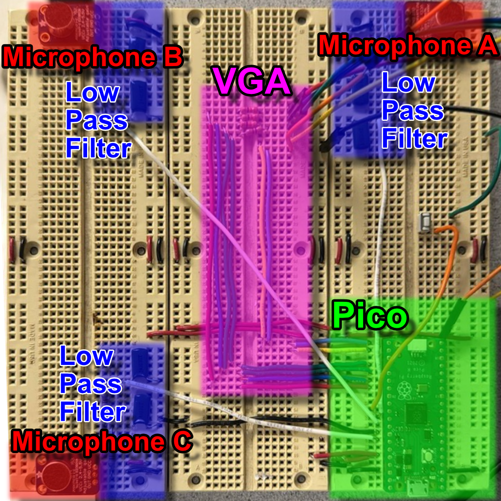

3. Program & Hardware Design
3.1 Hardware Design

We used three MAX4466 microphones at the corners of a breadboard forming a right triangle. Each mic’s output passes through a second-order ($20\,\mathrm{kHz}$) low-pass filter to remove ultrasonic noise.
The filtered outputs connect to the Pico’s ADC channels 0, 1, and 2. We minimized wiring length to reduce interference.
The provided VGA driver uses three PIO state machines and DMA:
- HSYNC PIO: Generates horizontal sync, front/back porches.
- VSYNC PIO: Counts lines via HSYNC interrupts and manages vertical timing.
- RGB PIO: Streams pixel data from a DMA-fed global pixel array (($3$ bits per pixel)).
A ($330\,\Omega$) resistor in series (with the Pico’s internal ($70\,\Omega$)) forms a divider to step the Pico’s ($3.3\,\mathrm{V}$) GPIO down to ($0$-$0.7\,\mathrm{V}$) safe for VGA inputs.
3.2 Core Software Loop
The heart of the system resides in the sample_and_compute_loop() function within sample_compute.c, which orchestrates audio capture, processing, and visualization. Upon startup, vga_init() prepares the display subsystem.
The loop initializes three rolling buffers-one per microphone-and records time for pacing. In the inner sampling loop, the code:
- Reads $8$-bit ADC values from
dma_sample_arrayfor channels A, B, and C. - Converts them to signed $16$-bit samples.
- Pushes them into the respective circular buffers with
rolling_buffer_push().
Once each buffer is full, outgoing and incoming power are computed. If the “outgoing” energy (older half of each buffer) exceeds twice the “incoming” energy (newer half), an acoustic event is detected and processing begins.
Each rolling buffer is then flattened into a DC-offset-normalized frame via rolling_buffer_write_out(). Pairwise cross-correlations (correlations_init()) determine sample-shift estimates. If any shift is nonzero, correlations_average() updates long-term averages, and vga_draw() runs; otherwise, vga_draw_lite() updates only waveforms and shift markers.
3.3 Rolling Buffer Algorithm
Circular buffering of the microphone streams is implemented in rolling_buffer.c using a fixed-size array of BUFFER_SIZE samples. Each call to rolling_buffer_push():
- Computes indices for the “outgoing” sample (current head) and the midpoint sample (head minus half the buffer, wrapped).
- Updates four accumulators:
outgoing_total,outgoing_power,incoming_total, andincoming_power. - Uses the
SAMPLE_POWER(sample)macro for power tracking. - Overwrites the oldest sample, increments the head (wrapping at
BUFFER_SIZE), and setsis_fullafter the first wrap.
When processing, rolling_buffer_write_out() copies samples into a contiguous buffer_t, subtracts the average (dst_offset), and computes total power for correlation normalization.
3.4 Cross-Correlation Module
The cross-correlation engine in correlations.c provides both instantaneous and smoothed time-delay estimates.
-
correlations_init():
For each integer shiftsin [-MAX_SHIFT_SAMPLES, +MAX_SHIFT_SAMPLES], it computes the dot-product of two sample buffers offset bysand stores the 64-bit sum incorr->correlations[s + MAX_SHIFT_SAMPLES]. Thebest_shiftis set to the highest-scorings. -
correlations_average():
Applies an exponential decay filter based on elapsed time, blends new correlation values into a long-term array, and recomputesbest_shifton the smoothed data.
3.5 DMA-Driven Sampling
High-throughput ADC sampling is achieved in dma_sampler.c.
During dma_sampler_init(), the ADC is configured in round-robin mode for channels 0, 1, and 2 (GPIO26-28) with FIFO enabled and the clock divider set for maximum rate.
Two DMA channels are used:
- Sample channel: Reads $8$-bit samples from the ADC FIFO into the three-byte
dma_sample_array. - Control channel: Reloads the sample channel’s transfer pointer to form a continuous ping-pong cycle.
This yields a steady ($50\,\mathrm{kHz}$) sampling rate with minimal jitter and zero CPU overhead beyond reading dma_sample_array.
3.6 Microphone Geometry & Calibration
In microphones.c, microphones_init() computes the array geometry:
- Uses
MIC_DIST_AB_M,MIC_DIST_BC_M, andMIC_DIST_CA_Mwith the law of cosines to determine coordinates for an uncentered triangle (A′ at $(0,0)$, B′ at $(d_{AB},0)$, C′ accordingly). - Finds the centroid of A′B′C′ and shifts all points so the center of mass is at the origin.
- If
ROTATE_MICROPHONESis enabled, rotates all points so microphone A aligns with the +X axis via a standard 2D rotation.
3.7 VGA Visualization

The display routines in vga.c layer multiple graphical elements:
vga_init(): Callsvga_init_heatmap(), which draws axes and precomputes a heatmap lookup.vga_draw(): Renders correlation curves, overlays the heatmap of possible locations, and plots raw waveforms.vga_draw_lite(): Omits the heatmap and updates only markers and waveforms for low-latency frames.
Helper modules (vga_correlations, vga_heatmap, vga_text, vga_waveforms) use the lib/vga/vga16_graphics primitives to draw primitives based on correlation-derived color thresholds.
3.8 Third-Party & Reused Code
We build atop the official Raspberry Pi Pico SDK for multicore support, GPIO, ADC, DMA, and timing. The VGA stack uses the open-source lib/vga/vga16_graphics library. All custom modules-rolling buffers, correlation engine, DMA sampler, display routines-are authored in-house or derived from public-domain sources.